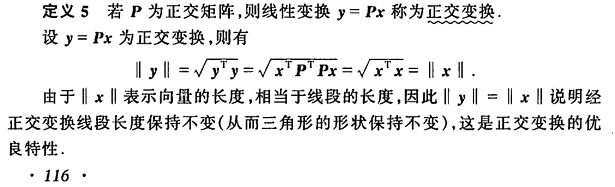
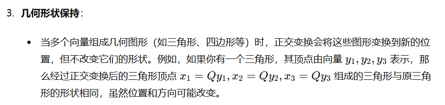

线性代数知识回顾
最近阅读论文，再回顾一些基础的线性代数知识
1. 行列式
转置不改变行列式的值 \[ |A|=|A^T| \]
对某一行加上另外一行的K倍，不改变行列式的值
只要矩阵有一行为0，行列式就是0。因为行列式等于任意一行/列的元素和其代数余子式的乘积之和，元素本身是0，行列式就是0 \[ |A|=a_{i0}M_{i0}+a_{i1}M_{i1}+\dots+a_{in}M_{in} \]
2. 矩阵的秩和行列式
三种线性变换：
一行乘以一个数字。行列式也相应乘以这个数字。
交换两行。行列式变号。（+-号）
一行加另一行的k倍。行列式不变。
因为给一行加减其他行的K倍不改变行列式的值，而矩阵的秩就是线性变换后，剩余的最小行数/列数，因此，对方阵来说，不满秩\(\iff\)行列式为0\(\iff\)有一行可以被线性变换为0\(\iff\)一行可以被其他行线性表示\(\iff\)不可以作为一组N维空间的基
3.矩阵的迹
- 定义
迹是矩阵对角元素的和： \[ Tr(A)=\sum_iA_{ii} \]
- 性质
转置不改变矩阵的迹
矩阵乘法顺序不影响矩阵的迹，即使二者形状不同。 \[ Tr(AB)=Tr(BA) \]
4. 基&正交基
N维向量空间中，任意N个线性无关的N维向量都是一组基，如果这N个向量互相垂直（内积为0），就叫正交基，如果模长限制为1，就是标准正交基。
随便给一个基，都能通过施密特正交化方法搞出来一个标准正交基。
5. 正交矩阵&正交变换
由于官方的定义实在是看不出来意义，因此本人从实际应用出发，力求让数学变成工具，而不是为了数学而数学。
- 定义
一个方阵如果所有列向量都是两两正交的，这就是个正交矩阵，同时，这个列向量也是一组正交基。（当然，矩阵的行和列是等价的，所以行也是）
- 性质
假设\(P\)是一个正交矩阵，那么\(y=Px\)所表示的线性变换就是一个正交变换，正交变换有个特性：

上图来自同济大学线性代数第5版p116.
这图中说了一句三角形的形状保持不变，由于本人学习线性代数时用的的本校自编教材，没有用同济线代教材，不清楚这是放的什么p，百度贴吧上有人有同样的问题，敬请参考：https://tieba.baidu.com/p/1844544171
ChatGPT-4o给出了如下回答：

正交矩阵更多性质请参考：
https://geek-docs.com/linear-algebra/matrix/zhengjiao-matrix.html
6. 线性变换和矩阵乘法
相信参加过保研/考研的，看过面经的，都能张嘴就来：矩阵乘法本质就是线性变换。那么我来问你：什么是线性变换？估计看到此博文的人有不少瞪眼了吧？
- 定义
保持线性组合的映射叫线性映射（线性变换）。
设\(V_n\), \(U_m\)分别是\(n\)维和\(m\)维线性空间，\(T\)是一个从\(V_n\)到\(U_m\)的映射，如果映射\(T\)满足：
- 任给\(\bm{\alpha_1}\), \(\bm{\alpha_2}\in V_n\)（从而\(\bm{\alpha_1}+\bm{\alpha_2}\in V_n\)），有
\[ T(\bm{\alpha_1}+\bm{\alpha_2})=T(\bm{\alpha_1})+T(\bm{\alpha_2}) \]
- 任给\(\bm{\alpha}\in V_n, \lambda \in R\)（从而\(\lambda \bm{\alpha}\in V_n\)，有 \[ T(\lambda \bm{\alpha})=\lambda T(\bm{\alpha}) \]
那么T就成为从\(V_n\)到\(U_m\)的线性映射，或者称为线性变换。上述两个加和乘的性质就叫线性性质。